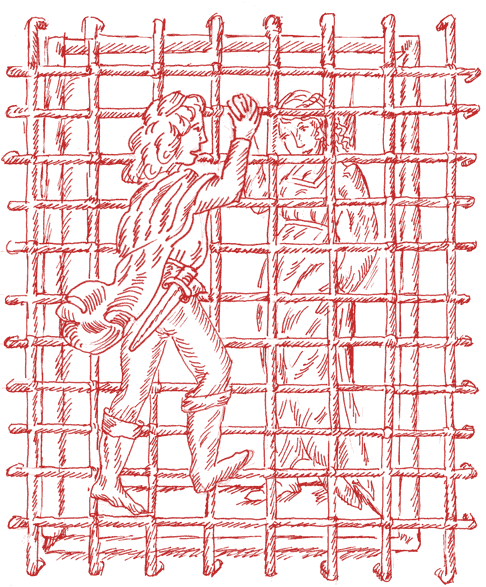

Il poema “Di Paolo e Daria Amanti” fu scritto da Gasparo Visconti (Milano 1461-1499, poeta e letterato italiano). Il manoscritto miniato fu eseguito da Francesco Binasco, miniatore milanese, per il duca Ludovico il Moro ed è attualmente conservato presso il Kupferstichkabinett del Museo di Berlino.
Il poema racconta come Bramante, durante il restauro del chiostro di Sant’Ambrogio, ritrova una tomba contenente i corpi di un giovane e di una giovinetta unitamente a un testo che racconta la loro tragica storia d'amore. Il poema continua con la trascrizione di questo testo.
Paolo nasce da Bianca Da Pusterla e Antonio Visconti. Per festeggiare il lieto evento, il padre Antonio organizza un grande torneo durante il quale si affrontano due squadre di cavalieri: i rossi e i bianchi.
Alla fine del torneo, i due capitani Ettore e Dario lottano violentemente e muoiono entrambi. Dopo poco tempo, Brigida, la moglie del defunto Dario, darà alla luce una bambina chiamata Daria.
Questo dicendo il suo cavallo sperona portando ai suoi nemici acre novelle; laer percosso in vario tuon risona; rimbomba Dario fino all'alte stelle; giudica Ettore che non fosse cosa buona intrar quel lupo in le sue pecorelle; senza lui che è il pastor: così se mosse e in Dario a mezo il corso riscontrasse.
Lo scontro fu di troppa rigidezza donando a lui del loro aperto scorno; Ettore il primo la sua lancia spezza in mezzo alla fronte del giovinetto adorno; e benché l'elmo sia di gran durezza pur certi chiodi in esso si slazzorno; non se ne avvide allora alcun: ma temo che ancor sian causa di dolor estremo.
Volò un troncone in fino alla finestra dove Luchino stava alla vedetta; e non avendo la persona destra o no avesse fatto alla civetta; il tronco che par messo da balestra altro tolto li aria che la berretta; lui così presto non tirò la Zucca che non gli discoprisse la parrucca.
Un giorno Paolo e Daria si incontrano per caso mentre passeggiano ed è così che, da bambini, si innamorano.
Crescono entrambi nella “cittadella”, il centro storico di Milano e per tutta la loro adolescenza il loro amore non fa che crescere.
Avvenne un dì non so se fu per caso o per secondo alcuni urgente fato; che Paolo per diporto da Tomaso fuori dalla propria casa fu inviato; ignari che il ciel terzo ha colmo il vaso tanto che la forza in terra sia versato; e giunti appena fuor della possada videro una fanciulla nella strada.
Non sembra che tre anni ancora avanzi la fanciulletta bella oltre misura; e a quella Paolo nostro giorno innanzi convien da se rimuova ogni altra cura; perche cangiossi a quel che era poco anzi scontrando fece giochi per sciagura; l'un mira l'altra e l'altra l'un si siso che non si pon levar vista dal viso.
Antonio, il padre di Paolo, disapprova l'amore del figlio per Daria al punto di separarli. Paolo si ribella al padre, non studia e diventa solitario, mentre Daria cresce in virtù.
Una notte, Paolo e Daria si incontrano segretamente alla finestra della camera di Daria. Daria piange la loro separazione, ma Paolo le offre un anello come promessa di nozze.
Era dalla finestra accanto un letto alla costuma genovese; da terra appunto sublimato quanto era il balcone; e qui su Daria ascese Paolo sentendo quella cava il guanto; e per la destra subito la prese; poi si avvinsono al collo ambe le braccia e bacia ognun la desirata faccia.
Ogni cor che d'amor mai non fu preda; si può dir di diamante o di diaspro; però commando che de audir disceda il mio parlar; che contro lui me inaspro e venga avanti ciascun che creda per prova il foco che è si dolce e aspro; che questi immaginando avran certezza di quanta è degli amanti ora la dolcezza.
Per volontà del padre, Paolo parte in viaggio per Gerusalemme.
Durante la traversata, la spedizione incontra navi turche, ne segue una battaglia cruenta.
Vedevase a mal porto e mal contento ogni cristian che il nostro legno serra; però che il turco l'ha di sotto al vento perché serviva lor vento alla terra; si che ciascun spronato dal spavento si apparecchiava alla futura guerra; Et in un tratto armaron di tarchoni intorno di diffese e di cottoni.
La turca armata che venia non tarda; al legno venetian tanto fe accosta; che i nostri con un colpo di bombarda ferirno in una susta sua per costa; e fu la pietra messa si gagliarda che in un momento o senza alcuna sosta; a quella ruppe il fondo e le traverse; e dentro alle false acque la summerse.
Daria è obbligata da Antonio a farsi monaca. Al rientro a Milano, Paolo va a cercarla nel convento... Daria si sente male e sviene...
(To be continued...)